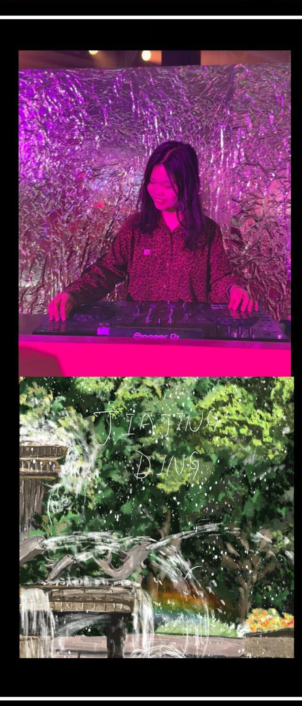

assets/images/about-photo.jpgJIAJING DING
I am a second-year Interaction Design student at the University of Sydney, interested in UI/UX, music, creative technology, and digital systems.
My work combines human-centred design with prototyping, sound interaction, environmental experiences, and responsive digital systems.
I aim to design playful and emotionally engaging experiences across both digital and physical contexts.